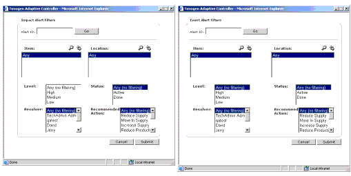

Filtering Lists
The default view for lists of Impact Alerts and Event Alerts is to view all that you've subscribed to. If the list is long, it is separated into pages.
You can filter any list to make it shorter and easier to find the records you are interested in.
To filter a list
1 On an Impact Alert or Event Alert list page, click  . The Filter dialog box for the
type of record appears.
. The Filter dialog box for the
type of record appears.
. The Filter dialog box for the
type of record appears.
2 Enter or select the filter criteria:
· If you know the Alert ID, enter it and click Go.
· Select one or more Items, Locations, Levels, Statuses, Resolvers, and
Recommended Actions (to select more than one, hold down the CRTL key while
you click), then click Submit.
Note: To view more records in the Items and Locations lists, click  , then find
and select one or more Items and Locations.
, then find
and select one or more Items and Locations.